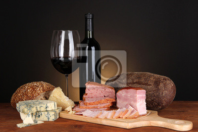
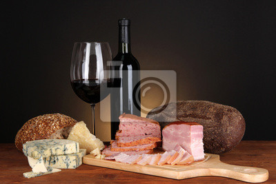

Bem-vindo à casa de carnes e empório Santa Cruz
A melhor casa de carnes e empório da cidade. Aqui você irá encontrar os melhores produtos, com uma qualidade superior aos da concorrência e melhor, com os preços mais baixos.
Na nossa casa, o sabor é a essência. Com anos de tradição e paixão pela gastronomia, oferecemos uma seleção impecável de carnes premium, queijos artesanais e vinhos refinados para os verdadeiros apreciadores.
 
